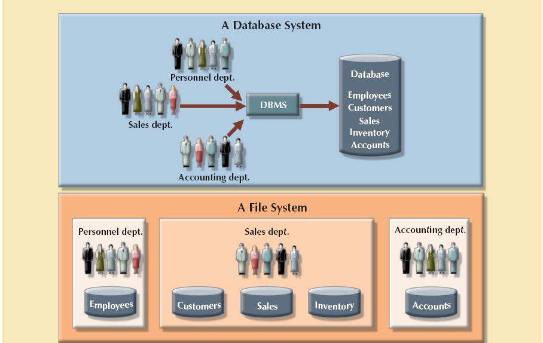

The difference between data and information
The difference between data and informationIn this chapter, you will learn:
The difference between data and information
What a database is, the various types of databases, and why they are valuable assets for decision making
The importance of database design
How modern databases evolved from file systems
About flaws in file system data management
The main components of the database system
The main functions of a database management system (DBMS)
Preview
Good decisions require good information that is derived from raw facts. These raw facts are known as data. Data are likely to be managed most efficiently when they are stored in a database. In this chapter, you will learn what a database is, what it does, and why it yields better results than other data management methods. You will also learn about various types of databases and why database design is so important.
Databases evolved from computer file systems. Although file system data management is now largely outmoded, understanding the characteristics of file systems is important because file systems are the source of serious data management limitations. In this chapter, you will also learn how the database system approach helps eliminate most of the shortcomings of file system data management.
Imagine trying to operate a business without knowing who your customers are, what products you are selling, who is working for you, who owes you money, and to whom you owe money. All businesses have to keep this type of data and much more; just as importantly, they must have those data available to decision makers when necessary. It can be argued that the ultimate purpose of all business information systems is to help businesses use information as an organizational resource. At the heart of all of these systems are the collection, storage, aggregation, manipulation, dissemination, and management of data.
Depending on the type of information system and the characteristics of the business, these data could vary from a few megabytes on just one or two topics to terabytes covering hundreds of topics within the business’s internal and external environment. Telecommunications companies such as Sprint and AT&T are known to have systems that keep data on trillions of phone calls, with new data being added to the system at speeds up to 70,000 calls per second!1 Not only do these companies have to store and manage immense collections of data, they have to be able to find any given fact in that data quickly. Consider the case of Internet search staple Google. While Google is reluctant to disclose many details about its data storage specifications, it is estimated that the company responds to over 91 million searches per day across a collection of data that is several terabytes in size. Impressively, the results of these searches are available almost instantly.
How can these businesses process this much data? How can they store it all, and then quickly retrieve just the facts that decision makers want to know, just when they want to know it? The answer is that they use databases. Databases, as explained in detail throughout this book, are specialized structures that allow computer-based systems to store, manage, and retrieve data very quickly. Virtually all modern business systems rely on databases; therefore, a good understanding of how these structures are created and their proper use is vital for any information systems professional. Even if your career does not take you down the amazing path of database design and development, databases will be a key component underpinning the systems that you use. In any case, you will probably make decisions in your career based on information generated from data. Thus, it is important that you know the difference between data and information.
To understand what drives database design, you must understand the difference between data and information. Data are raw facts. The word raw indicates that the facts have not yet been processed to reveal their meaning. For example, suppose that a university tracks data on faculty members for reporting to accrediting bodies. To get the data for each faculty member into the database, you would provide a screen to allow for convenient data entry, complete with drop-down lists, combo boxes, option buttons, and other data-entry validation controls. Figure 1.1, Panel A, shows a simple data-entry form from a software package named Sedona. When the data are entered into the form and saved, they are placed in the underlying database as raw data, as shown in Figure 1.1, Panel B. Although you now have the facts in hand, they are not particularly useful in this format. Reading through hundreds of rows of data for faculty members does not provide much insight into the overall makeup of the faculty. Therefore, you transform the raw data into a data summary like the one shown in Figure 1.1, Panel C. Now you can get quick answers to questions such as “What percentage of the faculty in the Information Systems (INFS) department are adjuncts?” In this case, you can quickly determine that 20% of the INFS faculty members are adjunct faculty. Because graphics can enhance your ability to quickly extract meaning from data, you show the data summary pie chart in Figure 1.1, Panel D.
FIGURE 1.1 Transforming raw data into information

SOURCE: Course Technology/Cengage Learning Data entry screen courtesy of Sedona Systems, 2011. Information screens courtesy of JCBDashboard, 2011.
Information is the result of processing raw data to reveal its meaning. Data processing can be as simple as organizing data to reveal patterns or as complex as making forecasts or drawing inferences using statistical modeling. To reveal meaning, information requires context. For example, an average temperature reading of 105 degrees does not mean much unless you also know its context: Is this reading in degrees Fahrenheit or Celsius? Is this a machine temperature, a body temperature, or an outside air temperature? Information can be used as the foundation for decision making. For example, the data summary for the faculty can provide accrediting bodies with insights that are useful in determining whether to renew accreditation for the university.
Keep in mind that raw data must be properly formatted for storage, processing, and presentation. For example, dates might be stored in Julian calendar formats within the database, but displayed in a variety of formats, such as day-month-year or month/day/year, for different purposes. Respondents’ yes/no responses might need to be converted to a Y/N, or 0/1, format for data storage. More complex formatting is required when working with complex data types, such as sounds, videos, or images.
In this “information age,” production of accurate, relevant, and timely information is the key to good decision making. In turn, good decision making is the key to business survival in a global market. We are now said to be entering the “knowledge age.”2 Data are the foundation of information, which is the bedrock of knowledge—that is, the body of information and facts about a specific subject. Knowledge implies familiarity, awareness, and understanding of information as it applies to an environment. A key characteristic of knowledge is that “new” knowledge can be derived from “old” knowledge.
Let’s summarize some key points:
• Data constitute the building blocks of information.
• Information is produced by processing data.
• Information is used to reveal the meaning of data.
• Accurate, relevant, and timely information is the key to good decision making.
• Good decision making is the key to organizational survival in a global environment.
Timely and useful information requires accurate data. Such data must be properly generated and stored in a format that is easy to access and process. And, like any basic resource, the data environment must be managed carefully. Data management is a discipline that focuses on the proper generation, storage, and retrieval of data. Given the crucial role that data play, it should not surprise you that data management is a core activity for any business, government agency, service organization, or charity.
Efficient data management typically requires the use of a computer database. A database is a shared, integrated computer structure that stores a collection of:
• End-user data—that is, raw facts of interest to the end user.
• Metadata, or data about data, through which the end-user data are integrated and managed.
The metadata describe the data characteristics and the set of relationships that links the data found within the database. For example, the metadata component stores information such as the name of each data element, the type of values (numeric, dates, or text) stored on each data element, and whether the data element can be left empty. The metadata provide information that complements and expands the value and use of the data. In short, metadata present a more complete picture of the data in the database. Given the characteristics of metadata, you might hear a database described as a “collection of self-describing data.”
A database management system (DBMS) is a collection of programs that manages the database structure and controls access to the data stored in the database. In a sense, a database resembles a very well-organized electronic filing cabinet in which powerful software (the DBMS) helps manage the cabinet’s contents.
1.3.1 ROLE AND ADVANTAGES OF THE DBMS
The DBMS serves as the intermediary between the user and the database. The database structure itself is stored as a collection of files, and the only way to access the data in those files is through the DBMS. Figure 1.2 emphasizes the point that the DBMS presents the end user (or application program) with a single, integrated view of the data in the database. The DBMS receives all application requests and translates them into the complex operations required to fulfill those requests. The DBMS hides much of the database’s internal complexity from the application programs and users. The application program might be written by a programmer using a programming language such as Visual Basic.NET, Java, or C#, or it might be created through a DBMS utility program.
Having a DBMS between the end user’s applications and the database offers some important advantages. First, the DBMS enables the data in the database to be shared among multiple applications or users. Second, the DBMS integrates the many different users’ views of the data into a single all-encompassing data repository.
FIGURE 1.2 The DBMS manages the interaction between the end user and the database
SOURCE: Course Technology/Cengage Learning
Because data are the crucial raw material from which information is derived, you must have a good method to manage such data. As you will discover in this book, the DBMS helps make data management more efficient and effective. In particular, a DBMS provides advantages such as:
• Improved data sharing. The DBMS helps create an environment in which end users have better access to more and better-managed data. Such access makes it possible for end users to respond quickly to changes in their environment.
• Improved data security. The more users access the data, the greater the risks of data security breaches. Corporations invest considerable amounts of time, effort, and money to ensure that corporate data are used properly. A DBMS provides a framework for better enforcement of data privacy and security policies.
• Better data integration. Wider access to well-managed data promotes an integrated view of the organization’s operations and a clearer view of the big picture. It becomes much easier to see how actions in one segment of the company affect other segments.
• Minimized data inconsistency. Data inconsistency exists when different versions of the same data appear in different places. For example, data inconsistency exists when a company’s sales department stores a sales representative’s name as Bill Brown and the company’s personnel department stores that same person’s name as William G. Brown, or when the company’s regional sales office shows the price of a product as $45.95 and its national sales office shows the same product’s price as $43.95. The probability of data inconsistency is greatly reduced in a properly designed database.
• Improved data access. The DBMS makes it possible to produce quick answers to ad hoc queries. From a database perspective, a query is a specific request issued to the DBMS for data manipulation—for example, to read or update the data. Simply put, a query is a question, and an ad hoc query is a spur-of-the-moment question. The DBMS sends back an answer (called the query result set) to the application. For example, when dealing with large amounts of sales data, end users might want quick answers to questions (ad hoc queries). Some examples include:
- What was the dollar volume of sales by product during the past six months?
- What is the sales bonus figure for each of our salespeople during the past three months?
- How many of our customers have credit balances of $3,000 or more?
• Improved decision making. Better-managed data and improved data access make it possible to generate better-quality information, on which better decisions are based. The quality of the information generated depends on the quality of the underlying data. Data quality is a comprehensive approach to promoting the accuracy, validity, and timeliness of the data. While the DBMS does not guarantee data quality, it provides a framework to facilitate data quality initiatives. Data quality concepts will be covered in more detail in Chapter 15, Database Administration and Security.
• Increased end-user productivity. The availability of data, combined with the tools that transform data into usable information, empowers end users to make quick, informed decisions that can make the difference between success and failure in the global economy.
The advantages of using a DBMS are not limited to the few just listed. In fact, you will discover many more advantages as you learn more about the technical details of databases and their proper design.
A DBMS can be used to build many different types of databases. Each database stores a particular collection of data and is used for a specific purpose. Over the years, as technology and innovative uses of databases have evolved, different methods have been used to classify databases. For example, databases can be classified by the number of users supported, where the data are located, the type of data stored, the intended data usage, and the degree to which the data are structured.
The number of users determines whether the database is classified as single-user or multiuser. A single-user database supports only one user at a time. In other words, if user A is using the database, users B and C must wait until user A is done. A single-user database that runs on a personal computer is called a desktop database. In contrast, a multiuser database supports multiple users at the same time. When the multiuser database supports a relatively small number of users (usually fewer than 50) or a specific department within an organization, it is called a workgroup database. When the database is used by the entire organization and supports many users (more than 50, usually hundreds) across many departments, the database is known as an enterprise database.
Location might also be used to classify the database. For example, a database that supports data located at a single site is called a centralized database. A database that supports data distributed across several different sites is called a distributed database. The extent to which a database can be distributed and the way in which such distribution is managed are addressed in detail in Chapter 12, Distributed Database Management Systems.
In some contexts, such as research environments, a popular way of classifying databases is according to the type of data stored in them. Using this criterion, databases are grouped into two categories: general-purpose and discipline-specific databases. General-purpose databases contain a wide variety of data used in multiple disciplines—for example, a census database that contains general demographic data, and the LexisNexis and ProQuest databases that contain newspaper, magazine, and journal articles for a variety of topics. Discipline-specific databases contain data focused on specific subject areas. The data in this type of database are used mainly for academic or research purposes within a small set of disciplines. Examples of discipline-specific databases include financial data stored in databases such as CompuStat or CRSP, geographic information system (GIS) databases that store geospatial and other related data, and medical databases that store confidential medical history data.
The most popular way of classifying databases today, however, is based on how they will be used and on the time sensitivity of the information gathered from them. For example, transactions such as product or service sales, payments, and supply purchases reflect critical day-to-day operations. Such transactions must be recorded accurately and immediately. A database that is designed primarily to support a company’s day-to-day operations is classified as an operational database, also known as an online transaction processing (OLTP), transactional, or production database. In contrast, analytical databases focus primarily on storing historical data and business metrics used exclusively for tactical or strategic decision making. Such analysis typically requires extensive “data massaging” (data manipulation) to produce information on which to base pricing decisions, sales forecasts, market strategies, and so on. Analytical databases allow the end user to perform advanced data analysis of business data using sophisticated tools.
Typically, analytical databases comprise two main components: a data warehouse and an online analytical processing (OLAP) front end. The data warehouse is a specialized database that stores data in a format optimized for decision support. The data warehouse contains historical data obtained from the operational databases as well as data from other external sources. Online analytical processing (OLAP) is a set of tools that work together to provide an advanced data analysis environment for retrieving, processing, and modeling data from the data warehouse. In recent times, this area of database application has grown in importance and usage, to the point that it has evolved into its own discipline: business intelligence. The term business intelligence describes a comprehensive approach to capture and process business data with the purpose of generating information to support business decision making. Chapter 13, Business Intelligence and Data Warehouses, covers this topic in detail.
Databases can also be classified to reflect the degree to which the data are structured. Unstructured data are data that exist in their original (raw) state—that is, in the format in which they were collected. Therefore, unstructured data exist in a format that does not lend itself to the processing that yields information. Structured data are the result of formatting unstructured data to facilitate storage, use, and the generation of information. You apply structure (format) based on the type of processing that you intend to perform on the data. Some data might not be ready (unstructured) for some types of processing, but they might be ready (structured) for other types of processing. For example, the data value 37890 might refer to a zip code, a sales value, or a product code. If this value represents a zip code or a product code and is stored as text, you cannot perform mathematical computations with it. On the other hand, if this value represents a sales transaction, it must be formatted as numeric.
To further illustrate the concept of structure, imagine a stack of printed paper invoices. If you want to merely store these invoices as images for future retrieval and display, you can scan them and save them in a graphic format. On the other hand, if you want to derive information such as monthly totals and average sales, such graphic storage would not be useful. Instead, you could store the invoice data in a (structured) spreadsheet format so that you can perform the requisite computations. Actually, most data you encounter are best classified as semistructured. Semistructured data have already been processed to some extent. For example, if you look at a typical Web page, the data are presented in a prearranged format to convey some information. The database types mentioned thus far focus on the storage and management of highly structured data. However, corporations are not limited to the use of structured data. They also use semistructured and unstructured data. Just think of the valuable information that can be found on company e-mails, memos, and documents such as procedures, rules, and Web pages. Unstructured and semistructured data storage and management needs are being addressed through a new generation of databases known as XML databases. Extensible Markup Language (XML) is a special language used to represent and manipulate data elements in a textual format. An XML database supports the storage and management of semistructured XML data.
Table 1.1 compares the features of several well-known database management systems.
With the emergence of the World Wide Web and Internet-based technologies as the basis for the new “social media” generation, great amounts of data are being stored and analyzed. Social media refers to Web and mobile technologies that enable “anywhere, anytime, always on” human interactions. Websites such as Google, Facebook, MySpace, Twitter, and LinkedIn capture vast amounts of data about end users and consumers. These data grow exponentially and require the use of specialized database systems. Over the past few years, this new breed of specialized database has grown in sophistication and widespread usage. Currently, this new type of database is known as a NoSQL database. The term NoSQL (Not only SQL) is generally used to describe a new generation of database management systems that is not based on the traditional relational database model. You will learn more about this type of system in Chapter 2, Data Models.
1.4 WHY DATABASE DESIGN IS IMPORTANT
Database design refers to the activities that focus on the design of the database structure that will be used to store and manage end-user data. A database that meets all user requirements does not just happen; its structure must be designed carefully. In fact, database design is such a crucial aspect of working with databases that most of this book is dedicated to the development of good database design techniques. Even a good DBMS will perform poorly with a badly designed database.
Data is one of an organization’s most valuable assets. Data on customers, employees, orders, and receipts are all vital to the existence of a company. Tracking key growth and performance indicators are also vital to strategic and tactical plans to ensure future success; therefore, an organization’s data must not be handled lightly or carelessly. Thorough planning to ensure that data are properly used and leveraged to give the company the most benefit is just as important as proper financial planning to ensure that the company gets the best use from its financial resources.
Because current-generation DBMSs are easy to use, an unfortunate side effect is that many computer-savvy business users gain a false sense of confidence in their ability to build a functional database. These users can effectively navigate the creation of database objects, but without the proper understanding of database design, they tend to produce flawed, overly simplified structures that prevent the system from correctly storing data that corresponds to business realities, which produces incomplete or erroneous results when the data are retrieved. Consider the data shown in Figure 1.3, which illustrates the storage of data about employees and skills. Some employees have not passed a certification test in any skill, while others have been certified in several skills. Some certified skills are stored for several employees, while other skills have no employees that hold those certifications.
FIGURE 1.3 Employee skill certification in a poor design
SOURCE: Course Technology/Cengage Learning
Based on this storage of the data, notice the following problems.
• It would be difficult, if not impossible, to produce an alphabetical listing of employees based on their last names.
• To determine how many employees are certified in Basic Database Manipulation, you would need a program that counts the number of those certifications recorded in Skill1 and places it in a variable. Then the count of those certifications in Skill2 could be calculated and added to the variable. Finally, the count of those certifications in Skill3 could be calculated and added to the variable to produce the total.
• If you redundantly store the name of a skill with each employee who is certified in that skill, you run the risk of spelling the name differently for different employees. For example, the skill Basic Database Manipulation is also entered as Basic DB Manipulation for at least one employee in Figure 1.3, which makes it difficult to get an accurate count of employees who have the certification.
• The structure of the database will have to be changed by adding more columns to the table when an employee is certified in a fourth skill. It will have to be modified again if an employee is certified in a fifth skill.
Contrast this poor design with that shown in Figure 1.4, where the design has been improved by decomposing the data into three related tables. These tables contain all of the same data that were represented in Figure 1.3, but they are structured so that you can easily manipulate the data to view it in different ways and answer simple questions.
FIGURE 1.4 Employee skill certifications in a good design
SOURCE: Course Technology/Cengage Learning
With the improved structure in Figure 1.4, you can use simple commands in a standard data manipulation language to:
• Produce an alphabetical listing of employees by last name: SELECT * FROM EMPLOYEE ORDER BY EMPLOYEE_LNAME;
• Determine how many employees are certified in Basic Database Manipulation: SELECT Count(*) FROM SKILL JOIN CERTIFIED ON SKILL.SKILL_ID = CERTIFIED.SKILL_ID WHERE SKILL_NAME = ‘Basic Database Manipulation’;
You will learn more about these commands in Chapter 7, Introduction to Structured Query Language.
Note that because each skill name is stored only once, the names cannot be spelled or abbreviated differently for different employees. Also, the additional certification of an employee with a fourth or fifth skill does not require changes to the structure of the tables.
Proper database design requires the designer to identify precisely the database’s expected use. Designing a transactional database emphasizes accurate and consistent data and operational speed. Designing a data warehouse database emphasizes the use of historical and aggregated data. Designing a database to be used in a centralized, single-user environment requires a different approach from that used in the design of a distributed, multiuser database. This book emphasizes the design of transactional, centralized, single-user, and multiuser databases. Chapters 12 and 13 also examine critical issues confronting the designer of distributed and data warehouse databases.
Designing appropriate data repositories of integrated information using the two-dimensional table structures found in most databases is a process of decomposition. The integrated data must be decomposed properly into its constituent parts, with each part stored in its own table. Further, the relationships between these tables must be carefully considered and implemented so the integrated view of the data can be re-created later as information for the end user. A well-designed database facilitates data management and generates accurate and valuable information. A poorly designed database is likely to become a breeding ground for difficult-to-trace errors that may lead to bad decision making—and bad decision making can lead to the failure of an organization. Database design is simply too important to be left to luck. That’s why college students study database design, why organizations of all types and sizes send personnel to database design seminars, and why database design consultants often make an excellent living.
1.5 EVOLUTION OF FILE SYSTEM DATA PROCESSING
Understanding what a database is, what it does, and the proper way to use it can be clarified by considering what a database is not. A brief explanation of the evolution of file system data processing can be helpful in understanding the data access limitations that databases attempt to overcome. Understanding these limitations is relevant to database designers and developers because database technologies do not make these problems magically disappear—database technologies simply make it easier to create solutions that avoid these problems. Creating database designs that avoid the pitfalls of earlier systems requires that the designer understand these problems and how to avoid them; otherwise, the database technologies are no better (and are potentially even worse!) than the technologies and techniques they have replaced.
To be successful, an organization must develop systems for handling core business tasks. Historically, such systems were often manual, paper-and-pencil systems. The papers within these systems were organized to facilitate the expected use of the data. Typically, this was accomplished through a system of file folders and filing cabinets. As long as a collection of data was relatively small and an organization’s business users had few reporting requirements, the manual system served its role well as a data repository. However, as organizations grew and as reporting requirements became more complex, keeping track of data in a manual file system became more difficult. Therefore, companies looked to computer technology for help.
1.5.2 COMPUTERIZED FILE SYSTEMS
Generating reports from manual file systems was slow and cumbersome. In fact, some business managers faced government-imposed reporting requirements that led to weeks of intensive effort each quarter, even when a well-designed manual system was used. Therefore, a data processing (DP) specialist was hired to create a computer-based system that would track data and produce required reports.
Initially, the computer files within the file system were similar to the manual files. A simple example of a customer data file for a small insurance company is shown in Figure 1.5. (You will discover later that the file structure shown in Figure 1.5, although typically found in early file systems, is unsatisfactory for a database.)
The description of computer files requires a specialized vocabulary. Every discipline develops its own terminology to enable its practitioners to communicate clearly. The basic file vocabulary shown in Table 1.2 will help you to understand subsequent discussions more easily.
FIGURE 1.5 Contents of the CUSTOMER file
SOURCE: Course Technology/Cengage Learning
 ONLINE CONTENT
ONLINE CONTENT
The databases used in each chapter are available at www.cengagebrain.com. Throughout the book, Online Content boxes highlight material related to chapter content on the Website.
TABLE 1.2 Basic File Terminology
TERM | DEFINITION |
Data | Raw facts, such as a telephone number, a birth date, a customer name, and a year-to-date (YTD) sales value. Data have little meaning unless they have been organized in some logical manner. |
A character or group of characters (alphabetic or numeric) that has a specific meaning. A field is used to define and store data. | |
A logically connected set of one or more fields that describes a person, place, or thing. For example, the fields that constitute a customer record might consist of the customer’s name, address, phone number, date of birth, credit limit, and unpaid balance. | |
A collection of related records. For example, a file might contain data about the students currently enrolled at Gigantic University. |
Using the proper file terminology in Table 1.2, you can identify the file components shown in Figure 1.5. The CUSTOMER file contains 10 records. Each record is composed of nine fields: C_NAME, C_PHONE, C_ADDRESS, C_ZIP, A_NAME, A_PHONE, TP, AMT, and REN. The 10 records are stored in a named file. Because the file in Figure 1.5 contains customer data for the insurance company, its filename is CUSTOMER.
When business users wanted data from the computerized file, they sent requests for the data to the DP specialist. For each request, the DP specialist had to create programs to retrieve the data from the file, manipulate it in whatever manner the user had requested, and present it as a printed report. If a request was for a report that had been run previously, the DP specialist could rerun the existing program and provide the printed results to the user. As other business users saw the new and innovative ways in which customer data were being reported, they wanted to be able to view their data in similar fashions. This generated more requests for the DP specialist to create more computerized files of other business data, which in turn meant that more data management programs had to be created, and more requests for reports. For example, the sales department at the insurance company created a file named SALES, which helped track daily sales efforts. The sales department’s success was so obvious that the personnel department manager demanded access to the DP specialist to automate payroll processing and other personnel functions. Consequently, the DP specialist was asked to create the AGENT file shown in Figure 1.6. The data in the AGENT file were used to write checks, keep track of taxes paid, and summarize insurance coverage, among other tasks.
FIGURE 1.6 Contents of the AGENT file
SOURCE: Course Technology/Cengage Learning
As more and more computerized files were developed, the problems with this type of file system became apparent. While these problems are explored in detail in the next section, the problems basically centered on having many data files that contained related—often overlapping—data with no means of controlling or managing the data consistently across all of the files. As shown in Figure 1.7, each file in the system used its own application program to store, retrieve, and modify data. Also, each file was owned by the individual or the department that commissioned its creation.
The advent of computer files to store company data was significant; it not only established a landmark in the use of computer technologies, it also represented a huge step forward in a business’s ability to process data. Previously, users had direct, hands-on access to all of the business data. But they didn’t have the tools to convert those data into the information they needed. The creation of computerized file systems gave them improved tools for manipulating the company data that allowed them to create new information. However, it had the additional effect of introducing a schism between the end users and their data. The desire to close the gap between the end users and the data influenced the development of many types of computer technologies, system designs, and uses (and misuses) of many technologies and techniques. However, such developments also created a split between the ways DP specialists and end users viewed the data.
FIGURE 1.7 A simple file system

SOURCE: Course Technology/Cengage Learning
• From the DP specialist’s perspective, the computer files within the file system were created to be similar to the manual files. Data management programs were created to add to, update, and delete data from the file.
• From the end user’s perspective, the systems separated the users from the data. As the users’ competitive environment pushed them to make more and more decisions in less time, users became frustrated by the delay between conceiving of a new way to create information from the data and the point when the DP specialist actually created the programs to generate that information.
1.5.3 FILE SYSTEM REDUX: MODERN END-USER PRODUCTIVITY TOOLS
The users’ desire for direct, hands-on access to data helped to fuel the adoption of personal computers for business use. Although not directly related to file system evolution, the ubiquitous use of personal productivity tools can introduce the same problems as the old file systems.
Personal computer spreadsheet programs such as Microsoft Excel are widely used by business users, and they allow the user to enter data in a series of rows and columns so the data can be manipulated using a wide range of functions. The popularity of spreadsheet applications has enabled users to conduct sophisticated data analysis that has greatly enhanced their ability to understand the data and make better decisions. Unfortunately, as in the old adage “When the only tool you have is a hammer, every problem looks like a nail,” users have become so adept at working with spreadsheets, they tend to use them to complete tasks for which spreadsheets are not appropriate.
A common misuse of spreadsheets is as a substitute for a database. Interestingly, end users often take the limited data to which they have direct access and place it in a spreadsheet format similar to that of the traditional, manual data storage systems—which is precisely what the early DP specialists did when creating computerized data files. Due to the large number of users with spreadsheets, each making separate copies of the data, the resulting “file system” of spreadsheets suffers from the same problems as the file systems created by the early DP specialists, which are outlined in the next section.
1.6 PROBLEMS WITH FILE SYSTEM DATA PROCESSING
The file system method of organizing and managing data was a definite improvement over the manual system, and the file system served a useful purpose in data management for over two decades—a very long time in the computer era. Nonetheless, many problems and limitations became evident in this approach. A critique of the file system method serves two major purposes:
• Understanding the shortcomings of the file system enables you to understand the development of modern databases.
• Many of the problems are not unique to file systems. Failure to understand such problems is likely to lead to their duplication in a database environment, even though database technology makes it easy to avoid them.
The following problems associated with file systems, whether created by DP specialists or through a series of spreadsheets, severely challenge the types of information that can be created from the data as well as the accuracy of the information:
• Lengthy development times. The first and most glaring problem with the file system approach is that even the simplest data-retrieval task requires extensive programming. With the older file systems, programmers had to specify what must be done and how to do it. As you will learn in upcoming chapters, modern databases use a nonprocedural data manipulation language that allows the user to specify what must be done without specifying how.
• Difficulty of getting quick answers. The need to write programs to produce even the simplest reports makes ad hoc queries impossible. Harried DP specialists who work with mature file systems often receive numerous requests for new reports. They are often forced to say that the report will be ready “next week” or even “next month.” If you need the information now, getting it next week or next month will not serve your information needs.
• Complex system administration. System administration becomes more difficult as the number of files in the system expands. Even a simple file system with a few files requires creating and maintaining several file management programs. Each file must have its own file management programs that allow the user to add, modify, and delete records; to list the file contents; and to generate reports. Because ad hoc queries are not possible, the file reporting programs can multiply quickly. The problem is compounded by the fact that each department in the organization “owns” its data by creating its own files.
• Lack of security and limited data sharing. Another fault of a file system data repository is a lack of security and limited data sharing. Data sharing and security are closely related. Sharing data among multiple geographically dispersed users introduces a lot of security risks. In terms of spreadsheet data, while many spreadsheet programs provide rudimentary security options, they are not always used, and even when they are, they are insufficient for robust data sharing among users. In terms of creating data management and reporting programs, security and data-sharing features are difficult to program and consequently are often omitted from a file system environment. Such features include effective password protection, the ability to lock out parts of files or parts of the system itself, and other measures designed to safeguard data confidentiality. Even when an attempt is made to improve system and data security, the security devices tend to be limited in scope and effectiveness.
• Extensive programming. Making changes to an existing file structure can be difficult in a file system environment. For example, changing just one field in the original CUSTOMER file would require a program that:
1. Reads a record from the original file.
2. Transforms the original data to conform to the new structure’s storage requirements.
3. Writes the transformed data into the new file structure.
4. Repeats the preceding steps for each record in the original file.
In fact, any change to a file structure, no matter how minor, forces modifications in all of the programs that use the data in that file. Modifications are likely to produce errors (bugs), and additional time is spent using a debugging process to find those errors. Those limitations, in turn, lead to problems of structural and data dependence.
1.6.1 STRUCTURAL AND DATA DEPENDENCE
A file system exhibits structural dependence, which means that access to a file is dependent on its structure. For example, adding a customer date-of-birth field to the CUSTOMER file shown in Figure 1.5 would require the four steps described in the previous section. Given this change, none of the previous programs will work with the new CUSTOMER file structure. Therefore, all of the file system programs must be modified to conform to the new file structure. In short, because the file system application programs are affected by changes in the file structure, they exhibit structural dependence. Conversely, structural independence exists when you can change the file structure without affecting the application’s ability to access the data.
Even changes in the characteristics of data, such as changing a field from integer to decimal, require changes in all the programs that access the file. Because all data access programs are subject to change when any of the file’s data storage characteristics change (that is, changing the data type), the file system is said to exhibit data dependence. Conversely, data independence exists when you can change the data storage characteristics without affecting the program’s ability to access the data.
The practical significance of data dependence is the difference between the logical data format (how the human being views the data) and the physical data format (how the computer must work with the data). Any program that accesses a file system’s file must tell the computer not only what to do but how to do it. Consequently, each program must contain lines that specify the opening of a specific file type, its record specification, and its field definitions. Data dependence makes the file system extremely cumbersome from the point of view of a programmer and database manager.
The file system’s structure makes it difficult to combine data from multiple sources, and its lack of security renders the file system vulnerable to security breaches. The organizational structure promotes the storage of the same basic data in different locations. (Database professionals use the term islands of information for such scattered data locations.) The dispersion of data is exacerbated by the use of spreadsheets to store data. In a file system, the entire sales department would share access to the SALES data file through the data management and reporting programs created by the DP specialist. With the use of spreadsheets, each member of the sales department can create his or her own copy of the sales data. Because data stored in different locations will probably not be updated consistently, the islands of information often contain different versions of the same data. For example, in Figures 1.5 and 1.6, the agent names and phone numbers occur in both the CUSTOMER and the AGENT files. You only need one correct copy of the agent names and phone numbers. Having them occur in more than one place produces data redundancy. Data redundancy exists when the same data are stored unnecessarily at different places.
Uncontrolled data redundancy sets the stage for:
• Poor data security. Having multiple copies of data increases the chances for a copy of the data to be susceptible to unauthorized access. Chapter 15, Database Administration and Security, explores the issues and techniques associated with securing data.
• Data inconsistency. Data inconsistency exists when different and conflicting versions of the same data appear in different places. For example, suppose you change an agent’s phone number in the AGENT file. If you forget to make the corresponding change in the CUSTOMER file, the files contain different data for the same agent. Reports will yield inconsistent results that depend on which version of the data is used.
NOTE
Data that display data inconsistency are also said to lack data integrity. Data integrity is defined as the condition in which all data in the database are consistent with real-world events and conditions. In other words, data integrity means that:
• Data are accurate—there are no data inconsistencies.
• Data are verifiable—the data will always yield consistent results.
Data-entry errors are more likely to occur when complex entries (such as 10-digit phone numbers) are made in several different files or recur frequently in one or more files. In fact, the CUSTOMER file shown in Figure 1.5 contains just such an entry error: the third record in the CUSTOMER file has a transposed digit in the agent’s phone number (615-882-2144 rather than 615-882-1244).
It is possible to enter a nonexistent sales agent’s name and phone number into the CUSTOMER file, but customers are not likely to be impressed if the insurance agency supplies the name and phone number of an agent who does not exist. Should the personnel manager allow a nonexistent agent to accrue bonuses and benefits? In fact, a data-entry error such as an incorrectly spelled name or an incorrect phone number yields the same kind of data integrity problems.
• Data anomalies. The dictionary defines anomaly as “an abnormality.” Ideally, a field value change should be made in only a single place. Data redundancy, however, fosters an abnormal condition by forcing field value changes in many different locations. Look at the CUSTOMER file in Figure 1.5. If agent Leah F. Hahn decides to get married and move, the agent name, address, and phone number are likely to change. Instead of making these changes in a single file (AGENT), you must also make the change each time that agent’s name and phone number occur in the CUSTOMER file. You could be faced with the prospect of making hundreds of corrections, one for each of the customers served by that agent! The same problem occurs when an agent decides to quit. Each customer served by that agent must be assigned a new agent. Any change in any field value must be correctly made in many places to maintain data integrity. A data anomaly develops when not all of the required changes in the redundant data are made successfully. The data anomalies found in Figure 1.5 are commonly defined as follows:
- Update anomalies. If agent Leah F. Hahn has a new phone number, it must be entered in each of the CUSTOMER file records in which Ms. Hahn’s phone number is shown. In this case, only four changes must be made. In a large file system, such a change might occur in hundreds or even thousands of records. Clearly, the potential for data inconsistencies is great.
- Insertion anomalies. If only the CUSTOMER file existed and you needed to add a new agent, you would also add a dummy customer data entry to reflect the new agent’s addition. Again, the potential for creating data inconsistencies would be great.
- Deletion anomalies. If you delete the customers Amy B. O’Brian, George Williams, and Olette K. Smith, you will also delete John T. Okon’s agent data. Clearly, this is not desirable.
1.6.3 LACK OF DESIGN AND DATA-MODELING SKILLS
A new problem that has evolved with the use of personal productivity tools (such as spreadsheet and desktop databases) is that users typically lack proper design and data-modeling skills. People naturally have an integrated view of the data in their environment. For example, consider a student’s class schedule. The schedule probably contains the student’s identification number and name, class code, class description, class credit hours, class instructor name, the class meeting days and times, and the class room number. In the mind of the student, these various data items compose a single unit. If a student organization wanted to keep a record of the schedules of its members, an end user might make a spreadsheet to store the schedule information. Even if the student makes a foray into the realm of desktop databases, he or she is likely to create a structure composed of a single table that mimics the schedule structure. As you will learn in the coming chapters, forcing this type of integrated data into a single two-dimensional table structure is a poor data design that leads to a large degree of redundancy for several data items.
Data-modeling skills are also a vital part of the design process. It is important to document the design properly. Design documentation is necessary to facilitate communication among the database designer, the end user, and the developer. Data modeling, as introduced later in this text, is the most common method of documenting database designs. Using a standardized data-modeling technique ensures that the data model fulfills its role in facilitating communication. The data model also provides an invaluable resource when maintaining or modifying a database as business requirements change. The data designs created by end users are rarely documented and never with an appropriate standardized data-modeling technique. On a positive note, however, this book will help you develop the skills needed to design and model a successful database that avoids the problems listed earlier in this section.
The problems inherent in file systems make using a database system very desirable. Unlike the file system, with its many separate and unrelated files, the database system consists of logically related data stored in a single logical data repository. (The “logical” label reflects the fact that the data repository appears to be a single unit to the end user, even though data might be physically distributed among multiple storage facilities and locations.) Because the database’s data repository is a single logical unit, the database represents a major change in the way end-user data are stored, accessed, and managed. The database’s DBMS, shown in Figure 1.8, provides numerous advantages over file system management, shown in Figure 1.7, by making it possible to eliminate most of the file system’s data inconsistency, data anomaly, data dependence, and structural dependence problems. Better yet, the current generation of DBMS software stores not only the data structures, but also the relationships between those structures and the access paths to those structures—all in a central location. The current generation of DBMS software also takes care of defining, storing, and managing all required access paths to those components.
FIGURE 1.8 Contrasting database and file systems

SOURCE: Course Technology/Cengage Learning
Remember that the DBMS is just one of several crucial components of a database system. The DBMS may even be referred to as the database system’s heart. However, just as it takes more than a heart to make a human being function, it takes more than a DBMS to make a database system function. In the sections that follow, you’ll learn what a database system is, what its components are, and how the DBMS fits into the picture.
1.7.1 THE DATABASE SYSTEM ENVIRONMENT
The term database system refers to an organization of components that define and regulate the collection, storage, management, and use of data within a database environment. From a general management point of view, the database system is composed of the five major parts shown in Figure 1.9: hardware, software, people, procedures, and data.
FIGURE 1.9 The database system environment
SOURCE: Course Technology/Cengage Learning
Let’s take a closer look at the five components shown in Figure 1.9:
• Hardware. Hardware refers to all of the system’s physical devices, including computers (PCs, workstations, servers, and supercomputers), storage devices, printers, network devices (hubs, switches, routers, fiber optics), and other devices (automated teller machines, ID readers, and so on).
• Software. Although the most readily identified software is the DBMS itself, three types of software are needed to make the database system function fully: operating system software, DBMS software, and application programs and utilities.
- Operating system software manages all hardware components and makes it possible for all other software to run on the computers. Examples of operating system software include Microsoft Windows, Linux, Mac OS, UNIX, and MVS.
- DBMS software manages the database within the database system. Some examples of DBMS software include Microsoft’s SQL Server, Oracle Corporation’s Oracle, Sun’s MySQL, and IBM’s DB2.
- Application programs and utility software are used to access and manipulate data in the DBMS and to manage the computer environment in which data access and manipulation take place. Application programs are most commonly used to access data within the database to generate reports, tabulations, and other information to facilitate decision making. Utilities are the software tools used to help manage the database system’s computer components. For example, all of the major DBMS vendors now provide graphical user interfaces (GUIs) to help create database structures, control database access, and monitor database operations.
• People. This component includes all users of the database system. On the basis of primary job functions, five types of users can be identified in a database system: system administrators, database administrators, database designers, system analysts and programmers, and end users. Each user type, described below, performs both unique and complementary functions.
- System administrators oversee the database system’s general operations.
- Database administrators, also known as DBAs, manage the DBMS and ensure that the database is functioning properly. The DBA’s role is sufficiently important to warrant a detailed exploration in Chapter 15, Database Administration and Security.
- Database designers design the database structure. They are, in effect, the database architects. If the database design is poor, even the best application programmers and the most dedicated DBAs cannot produce a useful database environment. Because organizations strive to optimize their data resources, the database designer’s job description has expanded to cover new dimensions and growing responsibilities.
- System analysts and programmers design and implement the application programs. They design and create the data-entry screens, reports, and procedures through which end users access and manipulate the database’s data.
- End users are the people who use the application programs to run the organization’s daily operations. For example, sales clerks, supervisors, managers, and directors are all classified as end users. High-level end users employ the information obtained from the database to make tactical and strategic business decisions.
• Procedures. Procedures are the instructions and rules that govern the design and use of the database system. Procedures are a critical, although occasionally forgotten, component of the system. Procedures play an important role in a company because they enforce the standards by which business is conducted within the organization and with customers. Procedures also help to ensure that companies have an organized way to monitor and audit the data that enter the database and the information generated from those data.
• Data. The word data covers the collection of facts stored in the database. Because data are the raw material from which information is generated, determining what data to enter into the database and how to organize those data is a vital part of the database designer’s job.
A database system adds a new dimension to an organization’s management structure. The complexity of this managerial structure depends on the organization’s size, its functions, and its corporate culture. Therefore, database systems can be created and managed at different levels of complexity and with varying adherence to precise standards. For example, compare a local movie rental system with a national insurance claims system. The movie rental system may be managed by two people, the hardware used is probably a single PC, the procedures are probably simple, and the data volume tends to be low. The national insurance claims system is likely to have at least one systems administrator, several full-time DBAs, and many designers and programmers; the hardware probably includes several servers at multiple locations throughout the United States; the procedures are likely to be numerous, complex, and rigorous; and the data volume tends to be high.
In addition to the different levels of database system complexity, managers must also take another important fact into account: database solutions must be cost-effective as well as tactically and strategically effective. Producing a million-dollar solution to a thousand-dollar problem is hardly an example of good database system selection or of good database design and management. Finally, the database technology already in use is likely to affect the selection of a database system.
A DBMS performs several important functions that guarantee the integrity and consistency of the data in the database. Most of those functions are transparent to end users, and most can be achieved only through the use of a DBMS. They include data dictionary management, data storage management, data transformation and presentation, security management, multiuser access control, backup and recovery management, data integrity management, database access languages and application programming interfaces, and database communication interfaces. Each of these functions is explained below.
• Data dictionary management. The DBMS stores definitions of the data elements and their relationships (metadata) in a data dictionary. In turn, all programs that access the data in the database work through the DBMS. The DBMS uses the data dictionary to look up the required data component structures and relationships, thus relieving you from having to code such complex relationships in each program. Additionally, any changes made in a database structure are automatically recorded in the data dictionary, thereby freeing you from having to modify all of the programs that access the changed structure. In other words, the DBMS provides data abstraction, and it removes structural and data dependence from the system. For example, Figure 1.10 shows how Microsoft SQL Server Express presents the data definition for the CUSTOMER table.
FIGURE 1.10 Illustrating metadata with Microsoft SQL Server Express
SOURCE: Course Technology/Cengage Learning
• Data storage management. The DBMS creates and manages the complex structures required for data storage, thus relieving you from the difficult task of defining and programming the physical data characteristics. A modern DBMS provides storage not only for the data but for related data-entry forms or screen definitions, report definitions, data validation rules, procedural code, structures to handle video and picture formats, and so on. Data storage management is also important for database performance tuning. Performance tuning relates to the activities that make the database perform more efficiently in terms of storage and access speed. Although the user sees the database as a single data storage unit, the DBMS actually stores the database in multiple physical data files. (See Figure 1.11.) Such data files may even be stored on different storage media. Therefore, the DBMS doesn’t have to wait for one disk request to finish before the next one starts. In other words, the DBMS can fulfill database requests concurrently. Data storage management and performance tuning issues are addressed in Chapter 11, Database Performance Tuning and Query Optimization.
FIGURE 1.11 Illustrating data storage management with Oracle
SOURCE: Course Technology/Cengage Learning
• Data transformation and presentation. The DBMS transforms entered data to conform to required data structures. The DBMS relieves you of the chore of distinguishing between the logical data format and the physical data format. That is, the DBMS formats the physically retrieved data to make it conform to the user’s logical expectations. For example, imagine an enterprise database used by a multinational company. An end user in England would expect to enter the date July 11, 2013, as “11/07/2013.” In contrast, the same date would be entered in the United States as “07/11/2013.” Regardless of the data presentation format, the DBMS must manage the date in the proper format for each country.
• Security management. The DBMS creates a security system that enforces user security and data privacy. Security rules determine which users can access the database, which data items each user can access, and which data operations (read, add, delete, or modify) the user can perform. This is especially important in multiuser database systems. Chapter 15, Database Administration and Security, examines data security and privacy issues in greater detail. All database users may be authenticated to the DBMS through a username and password or through biometric authentication such as a fingerprint scan. The DBMS uses this information to assign access privileges to various database components such as queries and reports.
• Multiuser access control. To provide data integrity and data consistency, the DBMS uses sophisticated algorithms to ensure that multiple users can access the database concurrently without compromising its integrity. Chapter 10, Transaction Management and Concurrency Control, covers the details of multiuser access control.
• Backup and recovery management. The DBMS provides backup and data recovery to ensure data safety and integrity. Current DBMS systems provide special utilities that allow the DBA to perform routine and special backup and restore procedures. Recovery management deals with the recovery of the database after a failure, such as a bad sector in the disk or a power failure. Such capability is critical to preserving the database’s integrity. Chapter 15 covers backup and recovery issues.
• Data integrity management. The DBMS promotes and enforces integrity rules, thus minimizing data redundancy and maximizing data consistency. The data relationships stored in the data dictionary are used to enforce data integrity. Ensuring data integrity is especially important in transaction-oriented database systems. Data integrity and transaction management issues are addressed in Chapter 7, Introduction to Structured Query Language (SQL), and Chapter 10.
• Database access languages and application programming interfaces. The DBMS provides data access through a query language. A query language is a nonprocedural language—one that lets the user specify what must be done without having to specify how. Structured Query Language (SQL) is the de facto query language and data access standard supported by the majority of DBMS vendors. Chapter 7 and Chapter 8, Advanced SQL, address the use of SQL. The DBMS also provides application programming interfaces to procedural languages such as COBOL, C, Java, Visual Basic.NET, and C#. In addition, the DBMS provides administrative utilities used by the DBA and the database designer to create, implement, monitor, and maintain the database.
• Database communication interfaces. A current-generation DBMS accepts end-user requests via multiple, different network environments. For example, the DBMS might provide access to the database via the Internet through the use of Web browsers such as Mozilla Firefox or Microsoft Internet Explorer. In this environment, communications can be accomplished in several ways:
- End users can generate answers to queries by filling in screen forms through their preferred Web browser.
- The DBMS can automatically publish predefined reports on a Website.
- The DBMS can connect to third-party systems to distribute information via e-mail or other productivity applications.
Database communication interfaces are examined in greater detail in Chapter 12, Distributed Database Management Systems; in Chapter 14, Database Connectivity and Web Technologies; and in Appendix I, Databases in Electronic Commerce. (Appendixes are available at www.cengagebrain.com.)
NOTE
Why a Spreadsheet Is Not a Database
While a spreadsheet allows for the creation of multiple tables, it does not support even the most basic database functionality such as support for self-documentation through metadata, enforcement of data types or domains to ensure consistency of data within a column, defined relationships among tables, or constraints to ensure consistency of data across related tables. Most users lack the necessary training to recognize the limitations of spreadsheets for these types of tasks.
1.7.3 MANAGING THE DATABASE SYSTEM: A SHIFT IN FOCUS
The introduction of a database system over the file system provides a framework in which strict procedures and standards can be enforced. Consequently, the role of the human component changes from an emphasis on programming (in the file system) to a focus on the broader aspects of managing the organization’s data resources and on the administration of the complex database software itself.
The database system makes it possible to tackle far more sophisticated uses of the data resources, as long as the database is designed to make use of that power. The kinds of data structures created within the database and the extent of the relationships among them play a powerful role in determining the effectiveness of the database system.
Although the database system yields considerable advantages over previous data management approaches, database systems do carry significant disadvantages. For example:
• Increased costs. Database systems require sophisticated hardware and software and highly skilled personnel. The cost of maintaining the hardware, software, and personnel required to operate and manage a database system can be substantial. Training, licensing, and regulation compliance costs are often overlooked when database systems are implemented.
• Management complexity. Database systems interface with many different technologies and have a significant impact on a company’s resources and culture. The changes introduced by the adoption of a database system must be properly managed to ensure that they help advance the company’s objectives. Because database systems hold crucial company data that are accessed from multiple sources, security issues must be assessed constantly.
• Maintaining currency. To maximize the efficiency of the database system, you must keep your system current. Therefore, you must perform frequent updates and apply the latest patches and security measures to all components. Because database technology advances rapidly, personnel training costs tend to be significant.
• Vendor dependence. Given the heavy investment in technology and personnel training, companies might be reluctant to change database vendors. As a consequence, vendors are less likely to offer pricing point advantages to existing customers, and those customers might be limited in their choice of database system components.
• Frequent upgrade/replacement cycles. DBMS vendors frequently upgrade their products by adding new functionality. Such new features often come bundled in new upgrade versions of the software. Some of these versions require hardware upgrades. Not only do the upgrades themselves cost money, it also costs money to train database users and administrators to properly use and manage the new features.
Now that you know what a database and DBMS are, and why they are necessary, you are ready to begin developing your career as a database professional.
1.8 PREPARING FOR YOUR DATABASE PROFESSIONAL CAREER
In this chapter, you were introduced to the concepts of data, information, databases, and DBMSs. You also learned that, regardless of what type of database you use (OLTP or OLAP), or what type of database environment you are working in (for example, Oracle, Microsoft, or IBM), the success of a database system greatly depends on how well the database structure is designed.
Throughout this book, you will learn the building blocks that lay the foundation for your career as a database professional. Understanding these building blocks and developing the skills to use them effectively will prepare you to work with databases at many different levels within an organization. A small sample of such career opportunities is shown in Table 1.3.
TABLE 1.3 Database Career Opportunities
JOB TITLE | DESCRIPTION | SAMPLE SKILLS REQUIRED |
Database developer | Creates and maintains database-based applications | Programming, database fundamentals, SQL |
Database designer | Designs and maintains databases | Systems design, database design, SQL |
Database administrator | Manages and maintains DBMS and databases | Database fundamentals, SQL, vendor courses |
Database analyst | Develops databases for decision support reporting | SQL, query optimization, data warehouses |
Database architect | Designs and implements database environments (conceptual, logical, and physical) | DBMS fundamentals, data modeling, SQL, hardware knowledge |
Database consultant | Helps companies leverage database technologies to improve business processes and achieve specific goals | Database fundamentals, data modeling, database design, SQL, DBMS, hardware, vendor-specific technologies |
Database security officer | Implements security policies for data administration | DBMS fundamentals, database administration, SQL, data security technologies |
As you also learned in this chapter, database technologies are constantly evolving to address new challenges such as large databases, semistructured and unstructured data, increasing processing speed, and lowering costs. While database technologies can change quickly, the fundamental concepts and skills do not. It is our goal that after you learn the database essentials in this book, you will be ready to apply your knowledge and skills to work with traditional OLTP and OLAP systems as well as cutting-edge, complex database technologies such as:
• Very Large Databases (VLDB). Many vendors are addressing the need for databases that support large amounts of data, usually in the petabyte range. (A petabyte is more than 1,000 terabytes.) VLDB vendors include Oracle Exadata, IBM’s Netezza, Greenplum, HP’s Vertica, and Teradata. VLDB are now being overtaken in market interest by Big Data databases.
• Big Data databases. Products such as Cassandra (Facebook) and BigTable (Google) are using “columnar-database” technologies to support the needs of database applications that manage large amounts of “nontabular” data. See more about this topic in Chapter 2.
• In-memory databases. Most major database vendors also offer some type of in-memory database support to address the need for faster database processing. In-memory databases store most of their data in primary memory (RAM) rather than in slower secondary storage (hard disks). In-memory databases include IBM’s solidDB and Oracle’s TimesTen.
• Cloud databases. Companies can now use cloud database services to quickly add database systems to their environment while simultaneously lowering the total cost of ownership of a new DBMS. A cloud database offers all the advantages of a local DBMS, but instead of residing within your organization’s network infrastructure, it resides on the Internet. See more about this topic in Chapter 14.
We address some of these topics in this book, but not all—no single book can cover the entire realm of database technologies. This book’s primary focus is to help you learn database fundamentals, develop your database design skills, and master your SQL skills so you will have a head start in becoming a successful database professional. However, you first must learn about the tools at your disposal. In the next chapter, you will learn different approaches to data management and how these approaches influence your designs.
 Data are raw facts. Information is the result of processing data to reveal their meaning. Accurate, relevant, and timely information is the key to good decision making, and good decision making is the key to organizational survival in a global environment.
Data are raw facts. Information is the result of processing data to reveal their meaning. Accurate, relevant, and timely information is the key to good decision making, and good decision making is the key to organizational survival in a global environment.
Data are usually stored in a database. To implement a database and to manage its contents, you need a database management system (DBMS). The DBMS serves as the intermediary between the user and the database. The database contains the data you have collected and “data about data,” known as metadata.
Database design defines the database structure. A well-designed database facilitates data management and generates accurate and valuable information. A poorly designed database can lead to bad decision making, and bad decision making can lead to the failure of an organization.
Databases can be classified according to the number of users supported, where the data are located, the type of data stored, the intended data usage, and the degree to which the data are structured.
Databases evolved from manual and then computerized file systems. In a file system, data are stored in independent files, each requiring its own data management programs. Although this method of data management is largely outmoded, understanding its characteristics makes database design easier to comprehend.
Some limitations of file system data management are that it requires extensive programming, system administration can be complex and difficult, making changes to existing structures is difficult, and security features are likely to be inadequate. Also, independent files tend to contain redundant data, leading to problems of structural and data dependence.
Database management systems were developed to address the file system’s inherent weaknesses. Rather than depositing data in independent files, a DBMS presents the database to the end user as a single data repository. This arrangement promotes data sharing, thus eliminating the potential problem of islands of information. In addition, the DBMS enforces data integrity, eliminates redundancy, and promotes data security.
ONLINE CONTENT
Flashcards and crossword puzzles for key term practice are available at www.cengagebrain.com.
1. Define each of the following terms:
a. data
b. field
c. record
d. file
2. What is data redundancy, and which characteristics of the file system can lead to it?
3. What is data independence, and why is it lacking in file systems?
4. What is a DBMS, and what are its functions?
5. What is structural independence, and why is it important?
6. Explain the differences among data, information, and a database.
7. What is the role of a DBMS, and what are its advantages? What are its disadvantages?
8. List and describe the different types of databases.
9. What are the main components of a database system?
10. What are metadata?
11. Explain why database design is important.
12. What are the potential costs of implementing a database system?
13. Use examples to compare and contrast unstructured and structured data. Which type is more prevalent in a typical business environment?
14. What are some basic database functions that a spreadsheet cannot perform?
15. What common problems does a collection of spreadsheets created by end users share with the typical file system?
16. Explain the significance of the loss of direct, hands-on access to business data that end users experienced with the advent of computerized data repositories.
ONLINE CONTENT
The file structures you see in this problem set are simulated in a Microsoft Access database named Ch01_Problems, which is available at www.cengagebrain.com.
FIGURE P1.1 The file structure for Problems 1–4
SOURCE: Course Technology/Cengage Learning
Given the file structure shown in Figure P1.1, answer Problems 1–4.
1. How many records does the file contain? How many fields are there per record?
2. What problem would you encounter if you wanted to produce a listing by city? How would you solve this problem by altering the file structure?
3. If you wanted to produce a listing of the file contents by last name, area code, city, state, or zip code, how would you alter the file structure?
4. What data redundancies do you detect? How could those redundancies lead to anomalies?
FIGURE P1.5 The file structure for Problems 5–8
SOURCE: Course Technology/Cengage Learning
5. Identify and discuss the serious data redundancy problems exhibited by the file structure shown in Figure P1.5.
6. Looking at the EMP_NAME and EMP_PHONE contents in Figure P1.5, what change(s) would you recommend?
7. Identify the various data sources in the file you examined in Problem 5.
8. Given your answer to Problem 7, what new files should you create to help eliminate the data redundancies found in the file shown in Figure P1.5?
FIGURE P1.9 The file structure for Problems 9–10
SOURCE: Course Technology/Cengage Learning
9. Identify and discuss the serious data redundancy problems exhibited by the file structure shown in Figure P1.9. (The file is meant to be used as a teacher class assignment schedule. One of the many problems with data redundancy is the likely occurrence of data inconsistencies—two different initials have been entered for the teacher named Maria Cordoza.)
10. Given the file structure shown in Figure P1.9, what problem(s) might you encounter if building KOM were deleted?
1 “Top Ten Largest Databases in the World,” Business Intelligence Lowdown, February 15, 2007, http://www.businessintelligencelowdown.com/2007/02/top_10_largest_.html.
2 Peter Drucker coined the phrase “knowledge worker” in 1959 in his book Landmarks of Tomorrow. In 1994, Esther Dyson, George Keyworth, and Dr. Alvin Toffer introduced the concept of the “knowledge age.”
3 Vendor offers single-user/personal DBMS version.